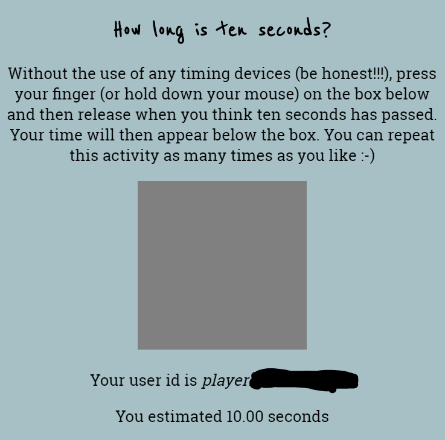
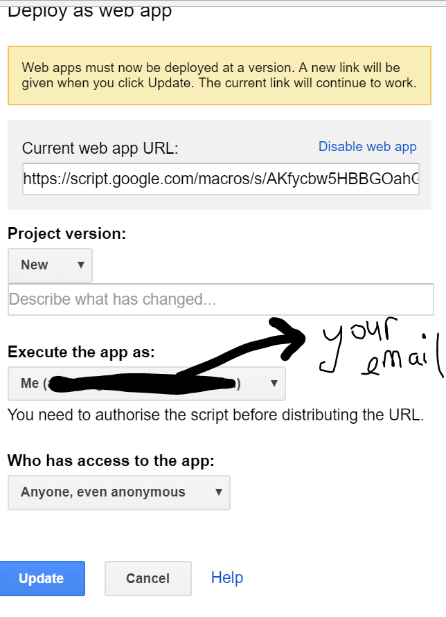

I’m hoping to have a student working on this project with me over our summer (Dec 2018 - Feb 2019), so this page is not super detailed at the moment and only focuses on creating/using web apps (with Javascript and Google apps script) that collect data in Google sheets.
Things you’ll need to try out these examples:
- a Google account/Google drive
- an internet connection
For use with students in large lectures (or just in general with other people not using your laptop!), you will need a public website/page to share your app through or to embed the web app in your LMS. Free solutions that I’ve used include github pages and Google sites.
NB: These examples focus on the tech side of creating/using web apps, and not on teaching with them as part of large-scale interactives.
Suppose you just want to use one of the web app that have already been designed? Let’s continue with the web app used in 1. If you haven’t tried it out yet, have a go here: https://annafergusson.github.io/LSinteractives/patience.html.

You can view the data being collected here: https://docs.google.com/spreadsheets/d/1NfO5rPtLz4EBUfJAWnpXEv-LUU3sKWOyrjPjY0JAMzM/edit?usp=sharing
And, if you make a copy of the Google sheet, you will also get a copy of the code used for the web app attached to the Google sheet. So do that! You will need to be signed in to your Google account first so you can make a copy of the Google sheet rather than just downloading a static version of the current data (which you are also welcome to do).
After you’ve made a copy of the Google sheet, it is no longer linked to my web app and any data you collect is yours only, to do with it what ever you want. You might want to clear Sheet1 of the data collected to start afresh, or make a copy of Sheet1 using the Duplicate option before clearing Sheet 1, to compare your students to the data collected from who knows who!
Then head to Tools -> Script editor using the main top menu options. You will see two files in the side bar of the Google apps script project page.
Code.gs has two functions that take care of displaying the webpage when your app is accessed and adding new rows to your Google sheet. Index.html contains HTML stuff including some Javascript to capture data from user interactions and to call the GAS functions. We’ll look closer at this code in 4. You are welcome, of course, to adjust any part of the HTML code e.g. change the instructions provided, be explicit about what data will be collected from users who interact with the app etc.
To get your app up and running, head to Publish -> Deploy as web app from the main top menu. Use the settings shown below (which should be what comes up):

You will be prompted to authorise the app when you click the Update button. Once you’ve signed your life away, then grab the URL from the Current web app URL box and test out the link. You should see a new row of data appear on your Google sheet after you’ve attempted to estimate ten seconds.
For any of the web apps I share in 3., the same process can be used:
Note: When I share/use the data from a Google sheet that has a web app attached to it, I typically give students/others the link to the Google sheet published as a CSV. You can do this by opening your copy of the Google sheet and selecting File -> Publish to the web from the main menu. Under Link select Sheet1 from the first dropdown and Comma-separated values (.csv) from the second dropdown. Then press the blue Publish button and grab the link.
If this link is used directly, it prompts the download of the csv file via the browser. Or you can use the link to read data into R.
# read the current data collected from my web app https://annafergusson.github.io/LSinteractives/patience.html
library(readr)
ten_seconds_data <- read_csv("https://docs.google.com/spreadsheets/d/e/2PACX-1vR_K8VZFPwKpV48nsAv_b7-SvE4fS39G_uh-Gdi3wa76k1i4ZhbSk12oHNnJCp5rn1p2yVokBYJOprn/pub?gid=0&single=true&output=csv")Give list of web apps with links here
Go through some ideas for adapting existing apps - code focus
Describe how I set up my interact app to share code between different apps and streamline develop process